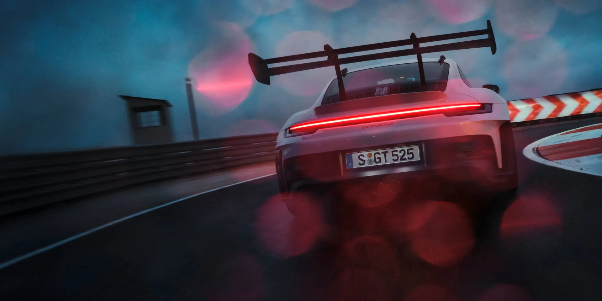
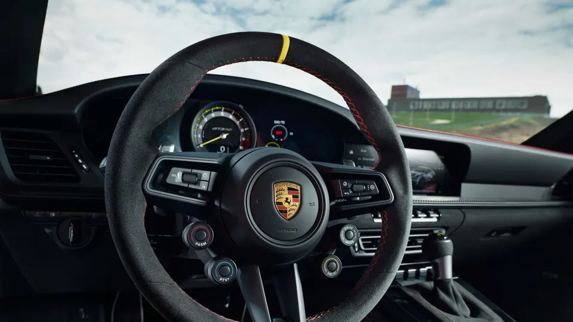

|
hall |
Sportler wissen: Für Höchstleistungen braucht es mehr als perfekte Bedingungen und Glück. Entscheidend ist der unbedingte Wille, mit jeder Trainingseinheit schneller und stärker zu werden. Alles zu hinterfragen – vor allem sich selbst. Und aus jedem Fehler das Maximum zu lernen. Denn die größte Herausforderung ist es, unschlagbar zu bleiben. Mit dieser Einstellung verschiebt Porsche immer wieder die Grenzen des Machbaren. Für eine nochmalige Steigerung der Rundstrecken-Performance – dank radikalem Abtrieb und umfangreichem Leichtbau. Erlebe den neuen 911 GT3 RS in Bestform. |
Maximierte Performance.
|
Sobald die Ampel das Startsignal gibt, bringt der neue 911 GT3 RS mit bis zu 465 Nm eine unglaubliche Performance auf die Rundstrecke. 386 kW (525 PS) katapultieren Sie in 3,2 Sekunden von 0 - 100 km/h und gönnen Ihnen bis zur Höchstgeschwindigkeit von 296 km/h keine Atempause. Die Leichtbau-Edelstahl-Sportabgasanlage sorgt dabei bis zur max. Drehzahl von 9.000 1/min für ein ungefiltertes Klangerlebnis. |
hall |
 |
Gewinnen ist Einstellungssache.
|  |
hall |
Das richtige Mindset entscheidet über Sieg oder Niederlage – genauso wie das individuelle Fine-Tuning des Set-ups. Das motorsportorientierte Lenkrad bietet mit 4 integrierten Mode-Schaltern vielfältigere Einstellungsmöglichkeiten als je zuvor: vom DRIVE MODE und Porsche Active Suspension Management (PASM) über Porsche Torque Vectoring Plus (PTV Plus) bis hin zur Traction Control (TC). Für eine noch interaktivere Verbindung zwischen Fahrer und Fahrzeug. |